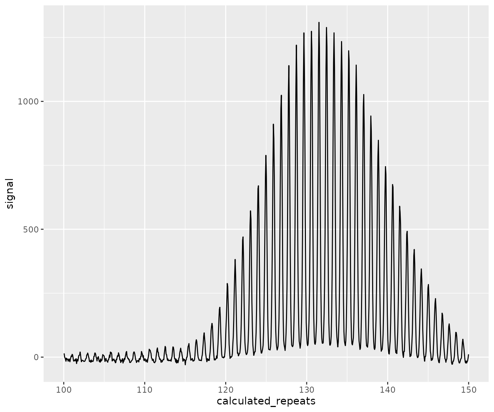
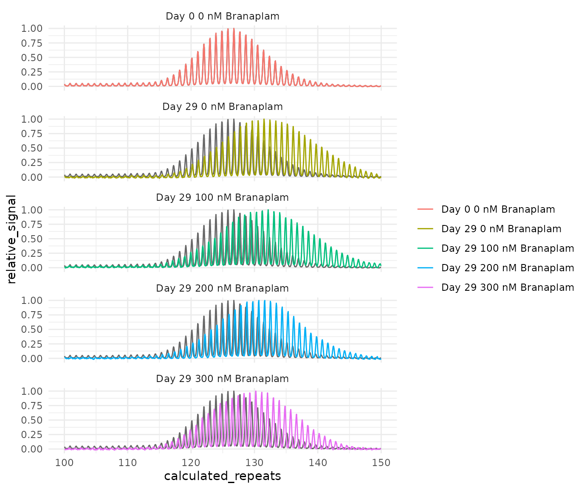

Plotting traces
plotting_traces.RmdExample data
lets first generate some example data by cloning the example data that comes with the package.
fsa_list <- lapply(cell_line_fsa_list, function(x) x$clone())
find_ladders(
fsa_list,
show_progress_bar = FALSE
)
fragments_list <- find_fragments(
fsa_list,
min_bp_size = 300
)
add_metadata(
fragments_list = fragments_list,
metadata_data.frame = metadata,
unique_id = "unique_id",
metrics_group_id = "metrics_group_id",
metrics_baseline_control = "metrics_baseline_control",
batch_run_id = "batch_run_id",
batch_sample_id = "batch_sample_id"
)
find_alleles(
fragments_list = fragments_list
)
call_repeats(
fragments_list = fragments_list
)plotting a trace
There are functions built into this package for plotting traces
plot_traces(fragments_list[1], xlim = c(100, 150), show_peaks = FALSE)This is convenient for quickly visualizing traces, but since it’s built using base r plotting, it’s not very user friendly and difficult to customize. We can be easily replicate this in ggplot2 for more flexibility and customization.
extract_trace_table(fragments_list[1]) |>
filter(between(calculated_repeats, 100, 150)) |>
ggplot(aes(calculated_repeats, signal)) +
geom_line() 
Extract raw traces
The raw traces can be extracted from the objects at any point after a
call to find_ladders(). However, if we extract the traces
after call_repeats(), the repeats will be called on the
trace data too. This also incorporates any batch correction (if used
call_repeats(batch_correction = TRUE)) that would allow
comparison of traces across different fragment analysis runs. Without a
batch correction, the traces may not be comparable across fragment
analysis runs and be off-alignment by several +- ~3 bp.
traces_df <- extract_trace_table(fragments_list)This is quite a large dataframe (550k rows) since it contains each scan (5961 per sample) from all samples in the example dataset. If you know exactly what samples you want to plot, you could first subset repeats_list before passing to extract_trace_table. It’s just a regular list, named with the unique id for each sample. So it can be subsetted with the unique id names. As an example, lets pull out a couple of unique ids from our metadata:
samples_for_plotting <- metadata[which(metadata$metrics_group_id == "CC6"), "unique_id"]
traces_for_plotting_df <- extract_trace_table(fragments_list[samples_for_plotting])This is a long dataframe, meaning that the trace table for each sample was bound by rows. They are uniquely identified with the unique_id column in the dataframe.
This dataframe has the following columns:
| Column name | Description |
|---|---|
| unique_id | Unique sample id. |
| scan | The individual scan number when the data was collected during capillary electrophoresis. |
| size | Base pair size at each individual scan. |
| signal | The raw signal from the channel with the data of interest. |
| ladder_signal | The raw ladder signal from the ladder channel. |
| off_scale | Indicating if the instrument called the data off scale for this scan. Note this could be from any channel. |
| calculated_repeats | The repeat size calculated from within call_repeats() function. |
Plot the traces
We can now plot the traces in whatever way we like. For this I’ll show an example using ggplot2. To explain some of the choices here:
- I’ll use
dplyr::filter()to zoom in on the area of interest - geom_line needs
aes(group = unique_id)to make sure each sample’s traces is plotted separately
traces_for_plotting_with_metadata_df |>
dplyr::filter(between(calculated_repeats, 100, 150)) |>
ggplot(aes(x = calculated_repeats,
y = signal,
colour = as.factor(treatment))) +
geom_line(aes(group = unique_id)) +
facet_wrap(vars(paste("Day", day, treatment, "nM Branaplam")), ncol = 1)This plot is plotting the traces from within the same group on top of each other. This shows us that our replicate samples were very reproducible and are basically on top of each other.
One issue is that the height of the signal for each sample varies. We can solve that by calculating a relative signal value. This means we also need to filter out the sample that had a failed PCR (low signal). To help with this, lets also extract the allele information and pull out the id of the sample to exclude.
alleles_df <- extract_alleles(fragments_list[samples_for_plotting])
sample_to_exclude <- alleles_df[which(is.na(alleles_df$allele_repeat)), "unique_id"]
traces_for_plotting_with_metadata_df <- traces_for_plotting_with_metadata_df |>
dplyr::filter(between(calculated_repeats, 100, 150),
!unique_id %in% sample_to_exclude) |>
group_by(unique_id) |>
mutate(relative_signal = signal / max(signal),
day_treatment = paste("Day", day, treatment, "nM Branaplam")) |>
ungroup()
traces_for_plotting_with_metadata_df |>
ggplot(aes(x = calculated_repeats,
relative_signal,
colour = as.factor(treatment))) +
geom_line(aes(group = unique_id)) +
facet_wrap(vars(day_treatment), ncol = 1)We can also use some tricks to overlay the traces on top of a reference trace. Some key things with this plot:
We are selecting a single sample for each treatment (group_by + filter)
to make one sample common across all facets, we can use geom_line(data = _ ) with a dataset that has the faceting column removed.
d0_trace <- traces_for_plotting_with_metadata_df |>
filter(day == 0) |>
filter(unique_id == unique(unique_id)[1]) |>
select(-day_treatment)
traces_for_plotting_with_metadata_df |>
group_by(day, treatment) |>
filter(unique_id == unique(unique_id)[1]) |>
ggplot(aes(x = calculated_repeats,
y = relative_signal,
colour = paste("Day", day, treatment, "nM Branaplam"))) +
geom_line(data = d0_trace ,
aes(group = unique_id),
colour = "gray40") +
geom_line(aes(group = unique_id)) +
facet_wrap(vars(day_treatment), ncol = 1) +
labs(colour = "") +
theme_minimal()